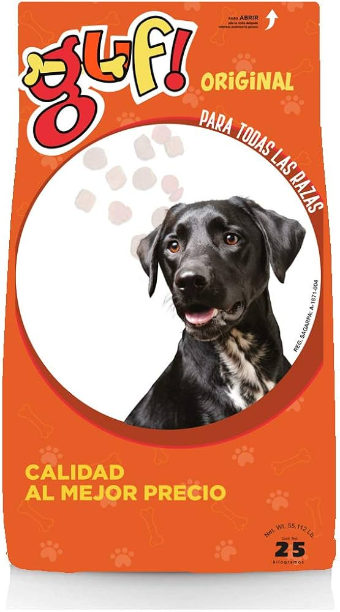
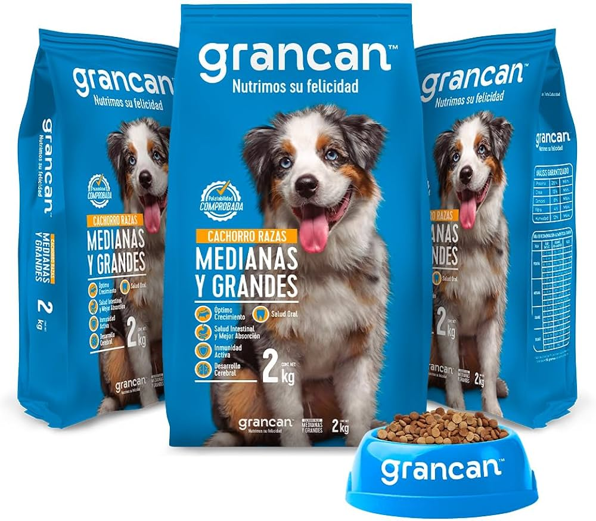
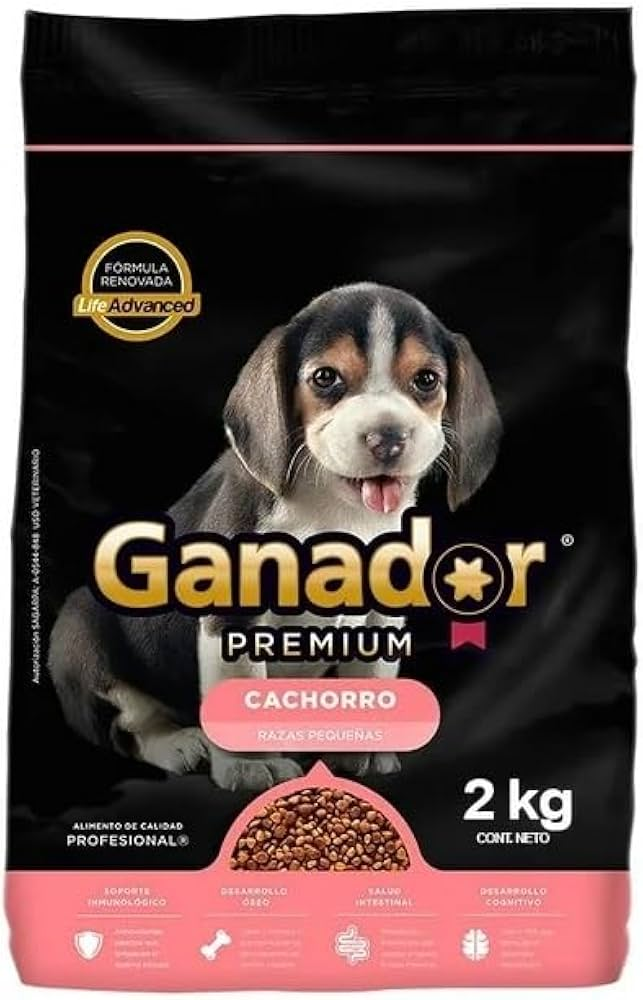
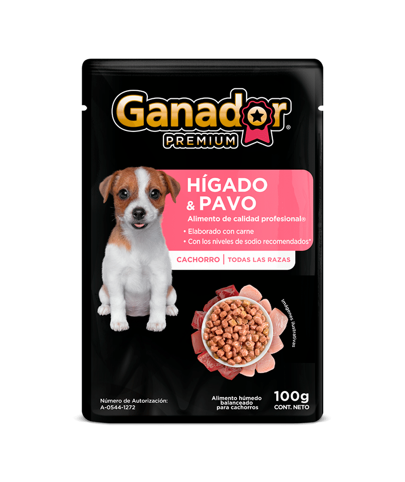

son alimento seco y formulado para satisfacer sus necesidades nutricionales, con ingredientes como carnes, cereales, aceites, vitaminas y minerales. Su textura crujiente se logra mediante un proceso llamado extrusión, que las cuece a alta presión y temperatura, dándoles una larga vida útil y facilidad de consumo.
| Por su calidad basica o que se le puede dar por su generalidad | Por su calidad premium que puede presentar como lo mejor de lo mejor |
|---|---|
  |
  |